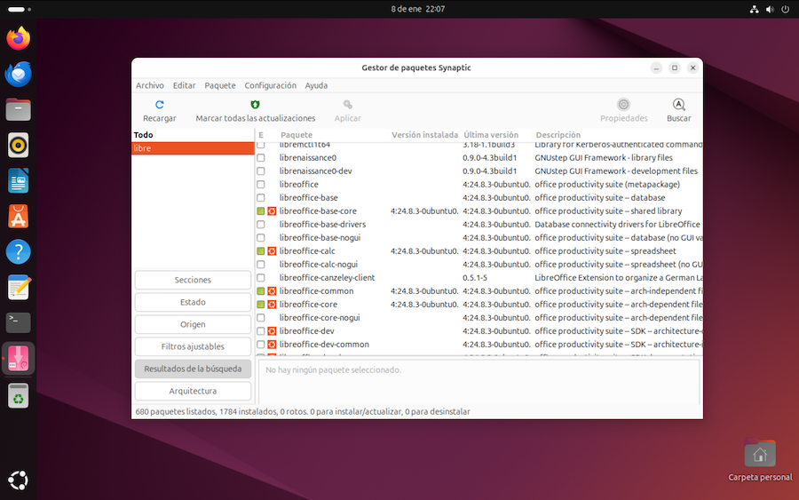
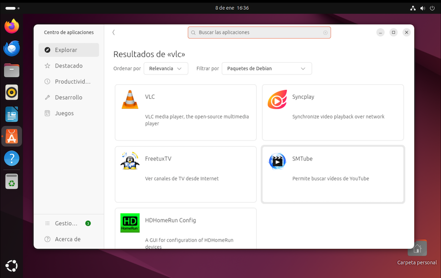

Instalar software¶
Una nueva instalación de Ubuntu deja en nuestra máquina una extensa colección de programas, que se puede ampliar acudiendo a los repositorios de la distribución para descargar e instalar todo tipo de paquetes de software. Para realizar esta labor contamos con varias herramientas que examinaremos en este capítulo.
Pero ¡cuidado! Es posible que, al añadir programas o hacer cambios en la configuración de nuestro ordenador, posteriormente queramos echar "marcha atrás". Conviene guardar previamente una "instantánea" del sistema, algo que se conoce como un snapshot, y que nos permite recuperar el estado de la máquina.
Snapshots¶
Un snapshot es una "foto" del ordenador que refleja su estado en un momento determinado, la memoria RAM, procesos que se están ejecutando, contenido del disco, etcétera. Podemos usarlo en el futuro para descartar todos los cambios que se hayan producido durante el tiempo transcurrido. Resulta útil, por ejemplo, cuando vayamos a efectuar cambios que no sabemos como deshacer, o de cuyas consecuencias no estamos seguros.
VMware cuenta con una utilidad de snapshots, que guarda el estado completo de la máquina virtual en el momento de crearlo. Para mostrar la lista de snapshots, pulsar en el menú de VMware Máquina Virtual > Snapshots. Veremos todos los estados de la máquina que hemos ido guardando, y el estado actual. Para tomar un nuevo snapshot, seleccionar el estado actual, y en el menú emergente que se muestra tras pulsar con el botón secundario del ratón, pulsar sobre Realizar Snapshot:
Para recuperar el estado anterior de la máquina, seleccionar el Snapshot deseado y pulsar en Restablecer, en el menú emergente. Se nos dará la opción de guardar el estado actual de la máquina antes de restablecerla, creando un nuevo Snapshot.
Los Snapshot se pueden eliminar siguiendo estos mismos procedimientos.
Dependencias¶
Una vez hecha una copia del estado de nuestra máquina virtual, podemos proceder a instalar los programas que deseemos. Pero la ejecución de muchos de estos programas puede depender de la existencia de otros complementos en nuestro equipo. La descarga de un paquete requiere, con frecuencia, que obtengamos otros necesarios, si no los tenemos ya.
Una de las fases de la instalación de una nueva aplicación es la comprobación de dependencias y la descarga de ese software complementario. Las herramientas que vamos a utilizar pueden resolver la instalación de dependencias de forma automática.
Formatos¶
La forma más simple de distribuir un paquete de software es reuniendo todos sus componentes en un archivo .zip. Tras su descarga, extraeremos los ficheros que lo integran y los dejaremos en alguna carpeta de nuestro equipo. Pero esto no resuelve dependencias ni configura el software. Las distribuciones Linux suelen contar con mecanismos para automatizar el proceso completo.
Una solución bastante potente, implementada por Debian, Ubuntu y otras distribuciones derivadas, consiste en "empaquetar" la aplicación y toda su información en un fichero .deb, y gestionar la instalación con un programa que descargue, configurare el software, y controle las dependencias.
RedHat, Fedora y derivados siguen un planteamiento similar, utilizando un formato propio en forma de archivos .rpm
Instalar paquetes desde el terminal de comandos¶
La forma más técnica de instalar software es usar el terminal de comandos. Supongamos, por ejemplo, que queremos instalar el reproductor de vídeo VLC. Vamos a utilizar el comando apt, Advanced Packaging Tool. Se usa en el caso de paquetes con formato tipo Debian.
El primer paso es hacer una búsqueda en el repositorio. El comando será:
$ apt-cache search vlc
La orden apt-cache permite hacer búsquedas en la base de datos de nuestro equipo. Cuando instalamos Linux, no se descarga todo el repositorio, pero sí un índice de lo que hay en él.
Este comando mostrará una lista de paquetes con ese texto en el nombre o en la descripción. Si la lista es muy extensa, podemos redirigir la salida al comando less:
$ apt-cache search vlc | less
El comando less permite desplazar el texto por la pantalla con las teclas Up y Down. Se sale con la tecla Q (abreviatura de quit).
Examinando la lista, veremos una entrada que dice:
vlc - reproductor multimedia y de flujo
y ese es el paquete a instalar:
$ sudo apt install vlc
Véase que se necesita permisos de administrador, por lo que anteponemos la palabra sudo. Una vez completada la operación, ya tendremos VLC entre las aplicaciones.
Esta forma de hacer las cosas automatiza todo el proceso, gestionando las dependencias. Pero está limitado a paquetes .deb.
El comando apt tiene una versión más antigua, llamada apt-get, con menos opciones de búsqueda y administración de paquetes. En cualquier caso, los dos comandos siguientes hacen lo mismo:
$ sudo apt-get install vlc
$ sudo apt install vlc
Sistemas derivados de RedHat
Aunque aquí se describe el funcionamiento de Ubuntu, veremos que cada distribución tiene sus propias herramientas de configuración y administración. En sistemas tipo RedHat, como es el caso de Fedora, el comando equivalente a apt es dnf:
$ sudo dnf install vlc
Suprimir paquetes¶
El comando para eliminar una aplicación consiste en sustituir la palabra install por remove:
$ sudo apt remove vlc
Synaptic¶
Si no queremos depender del Terminal de comandos, Synaptic es la versión gráfica del comando apt. Como sucede con este, se limita a paquetes en formato .deb.
Lo encontraremos en el menú de aplicaciones, apartado Administración, con el nombre de Gestor de paquetes Synaptic. Si se da el caso de que nuestra distribución no lo incluye de serie, podemos instalarlo con:
$ sudo apt install synaptic
Al ejecutarlo, se muestra un navegador de paquetes. Los marcados son los que ya tenemos instalados:

Pulsando en el menú Ayuda > Leyenda de iconos, obtenemos el significado de cada marca:
Pulsando en el botón Buscar, podemos filtrar los paquetes por nombre. Pulsando sobre un paquete, se muestra información del mismo. Pulsando sobre la casilla que hay a la izquierda de cada paquete, lo marcamos para instalar o desinstalar.
Una vez marcados los paquetes deseados, los instalamos pulsando en el icono "Aplicar". Si se da el caso, se nos preguntará si queremos instalar también las dependencias.
El gestor de software¶
La forma más simple de instalar software, reuniendo en un solo programa los repositorios de Debian y Ubuntu es mediante un programa llamado Centro de aplicaciones. Lo encontraremos entre los programas de Ubuntu:

Podemos navegar por una estructura de categorías, o hacer búsquedas por nombre. Una vez seleccionado un paquete, pulsamos sobre el mismo para obtener información e instalarlo.
Nótese que, al mostrar los resultados de búsqueda, se nos da opción a seleccionar la versión entre los paquetes del repositorio Debian, o los de la tienda de snaps.
La tienda de Snaps¶
Ubuntu tiene su propia versión de empaquetamiento, con el nombre de Snaps. Se trata de un sistema de gestión de paquetes universal, que pretende ser independiente de la distribución. Canonical, la empresa que distribuye Ubuntu, ha creado con este sistema una especie de Linux Store. Ver https://snapcraft.io
De todas formas, la "Tienda de Snaps" tiene sus detractores. Existe otra alternativa de empaquetamiento, popular en otras distribuciones, llamada Flatpack. Ver https://flathub.org
Ya hemos visto que, en el caso de paquetes Debian, podemos usar el comando apt para instalar software, como alternativa al uso del Centro de Aplicaciones. La tienda de Snaps también es accesible mediante comandos:
-
para ver las aplicaciones instaladas:
$ snap list -
para buscar aplicaciones a instalar:
$ snap find texto -
para obtener información sobre una aplicación:
$ snap info nombre -
para instalar una aplicación:
$ snap install nombre -
para desinstalar una aplicación;
$ snap remove nombre
Instalar a partir de descargas¶
Programas como Synaptic, el Centro de aplicaciones o el comando apt nos dan acceso a los repositorios de Ubuntu, y resuelven automáticamente las dependencias, descargando el software complementario que pudiera ser necesario para el buen funcionamiento del paquete a instalar.
Pero si queremos obtener un programa cuya versión en los repositorios no es la más reciente, o que no está incluido, tenemos que acudir a la página web del programa en cuestión. Suele haber diferentes opciones de descarga:
- un programa instalador que resuelva de forma automática todo el proceso
- un archivo comprimido del que podemos extraer su contenido y copiarlo al disco duro. Pero esto no resuelve la gestión de dependencias
- un archivo en formato
.debo.rpmcuya instalación permite resolver esas dependencias de forma automatizada.
Veamos un ejemplo de descarga manual. Abrimos el navegador web y acudimos a la página del editor de textos Visual Studio Code. Descargamos el archivo con extensión .deb, propio de sistemas tipo Debian.
¡Cuidado!
En este cuaderno estamos describiendo el uso de Linux en plataformas con arquitectura ARM de 64 bits. No intentar descargar e instalar software para chips de Intel, ya que es incompatible.
En el caso de este editor, hay que pulsar en el enlace other platforms y, si tenemos un MacBook ejecutando Ubuntu en una máquina virtual, seleccionar el formato .deb para plataformas ARM64
Tras la descarga, comprobamos que en la carpeta de descargas tenemos un archivo cuyo nombre es algo así como:
code_1.96.2-1734606918_arm64.deb
Para gestionar las instalaciones de paquetes descargados manualmente, nos va a venir muy bien un programa llamado Gdebi:
$ sudo apt install gdebi
Una vez instalado, lo ejecutamos con el comando:
$ gdebi-gtk
Y este es el aspecto que tiene:

Con el menú "Archivo" seleccionamos el fichero descargado, y usamos el botón [Instalar] para proceder a la instalación manual, resolviendo dependencias.